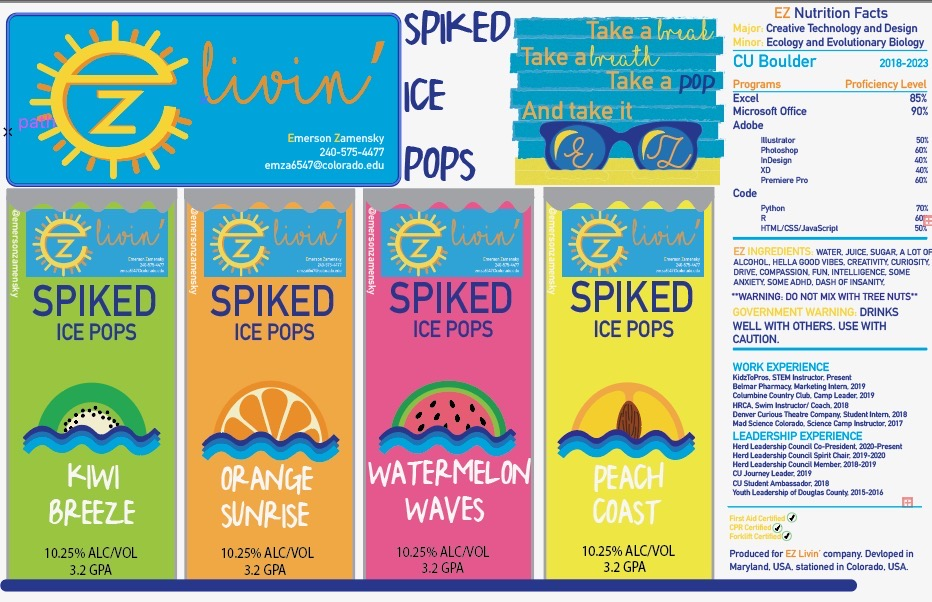
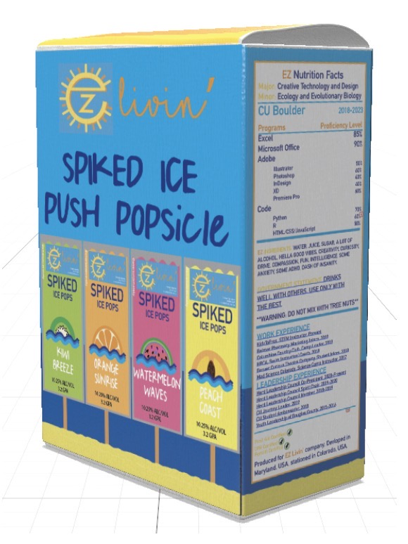

Self Brand Food
This assignment tasked us with branding oursevles as a food and formatting our résumé as the packaging/ nutrition info. I (naturally) chose to create a brand of spiked ice pops that includes my personal logo that I designed for this class (Text) as well. Everything is originally designed in Illustrator. This was by far my favorite project of the course (if only I could access Illustrator to exhibit my other ones).

